Actividad 1
- Configuración del entorno de trabajo:
- Asegúrate de contar con las siguientes herramientas en el entorno de AWS Learner Lab:
- Git (preinstalado en AWS CloudShell y disponible en instancias EC2).
- AWS CLI (preinstalado en AWS CloudShell y en Amazon Linux 2 en EC2).
- Configuración de Git y AWS CLI. Ejecuta los siguientes comandos en AWS CloudShell o en una instancia EC2 con Amazon Linux 2:
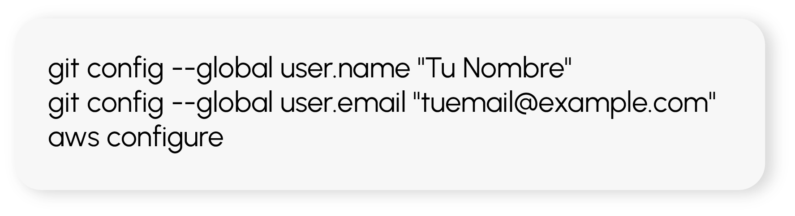
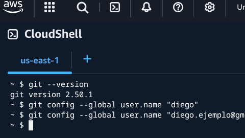
- AWS Access Key ID y Secret Access Key. En AWS Learner Lab no es posible crear credenciales personalizadas de IAM, por lo que se utilizará la configuración preexistente de IAM (LabRole).
- Región. Usar us-east-1 o us-west-2 (únicas permitidas en Learner Lab).
- Formato de salida. JSON.
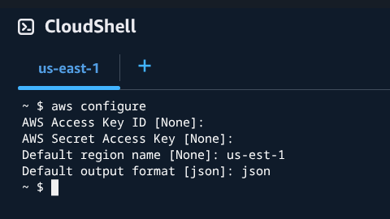
- Creación y configuración del repositorio en GitHub:
- Crea un repositorio en GitHub llamado mi-proyecto-devops.
- Clona el repositorio en tu entorno de trabajo (CloudShell o EC2):
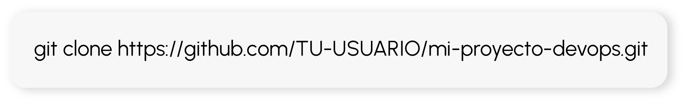
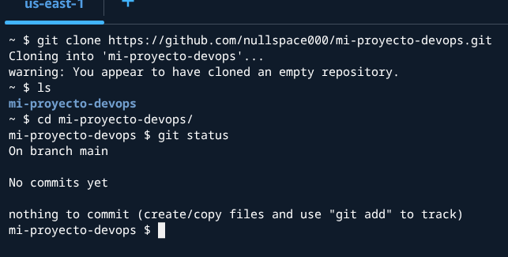
- Estructura de archivos. Dentro de la carpeta clonada, crea la siguiente estructura:
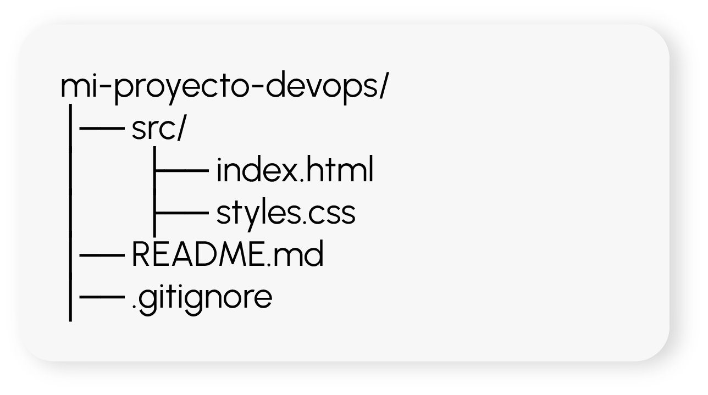
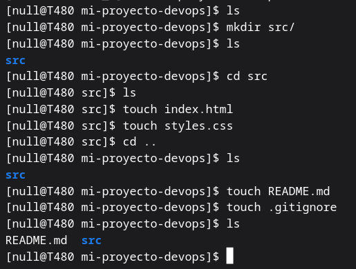
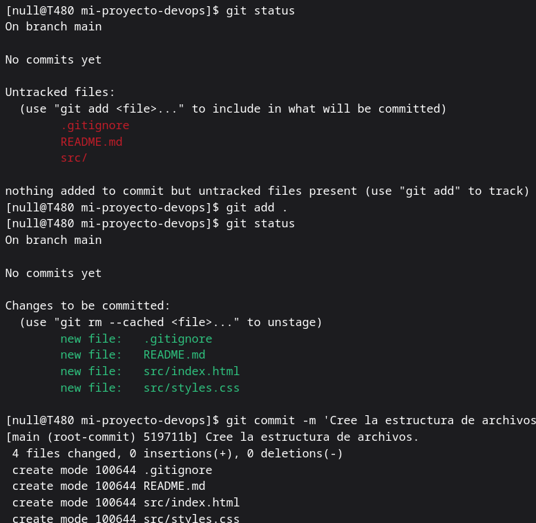
- Contenido del archivo index.html:
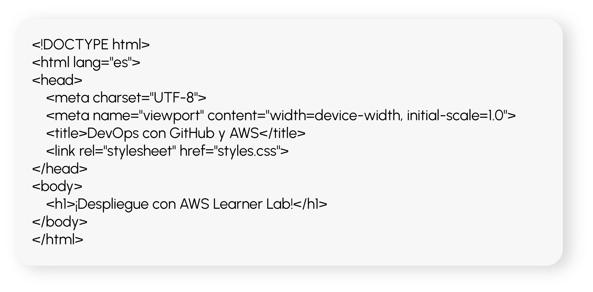
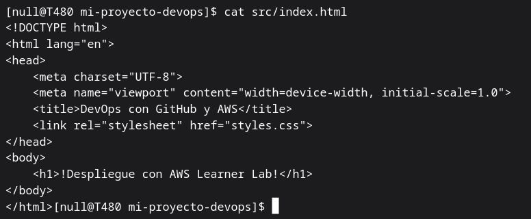
- Sube los archivos al repositorio:
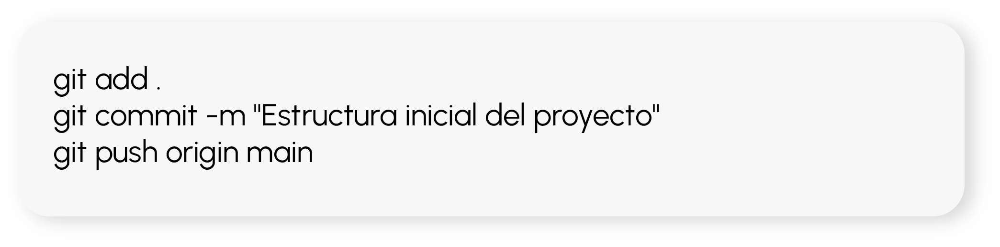
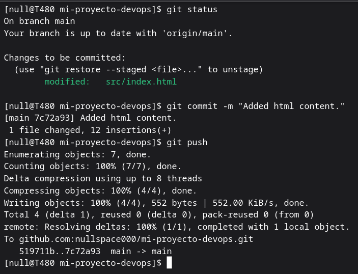
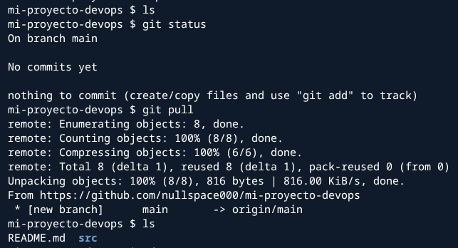
- Configuración del bucket en AWS S3:
- Crea un bucket en AWS S3 con las siguientes configuraciones:
- Nombre: mi-bucket-devops.
- Región: us-east-1 (requerido en Learner Lab).
- Activar alojamiento estático (solo verificación manual, no CloudFront).
- Sube los archivos al bucket:
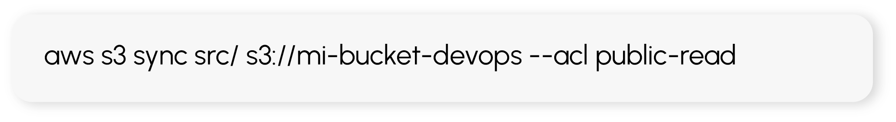
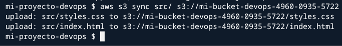
- Verifica que el sitio esté accesible:
- En la consola de AWS S3, copia la URL del bucket y accede a ella en un navegador.
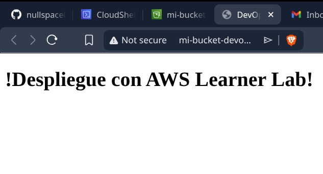
- Configuración de GitHub Actions para despliegue automático en S3:
- Dado que IAM en AWS Learner Lab no permite credenciales personalizadas, en lugar de GitHub Actions, se utilizará un script manual de despliegue:
- Crea un archivo deploy.sh en la raíz del repositorio con el siguiente contenido:
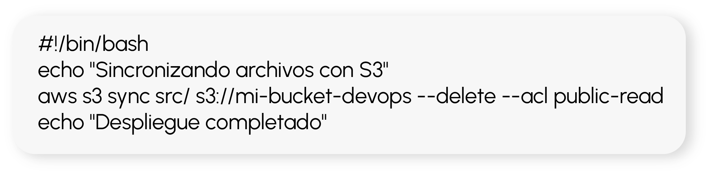
- Ejecuta el script manualmente cada vez que actualices el código:
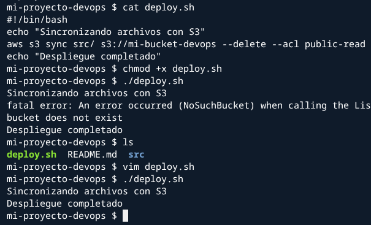
- Prueba del despliegue manual:
- Modifica index.html agregando una nueva línea:
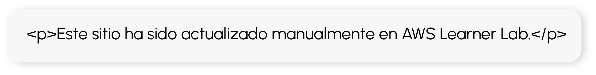
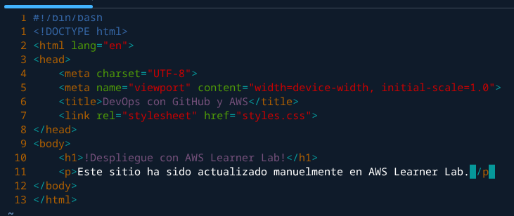
- Ejecuta nuevamente el script de despliegue:
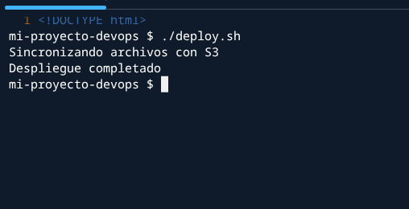
- Verifica la actualización accediendo nuevamente a la URL del bucket S3.
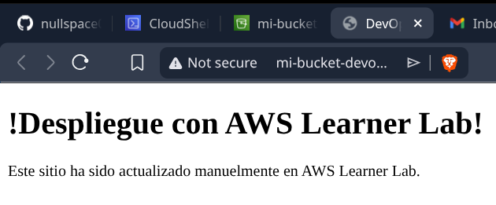
- Implementación de versionado con Git y estrategia de despliegue:
- Crea una nueva rama para futuras actualizaciones:
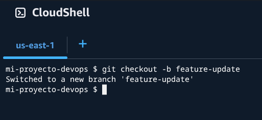
- Modifica index.html agregando una nueva sección y súbela a la nueva rama:
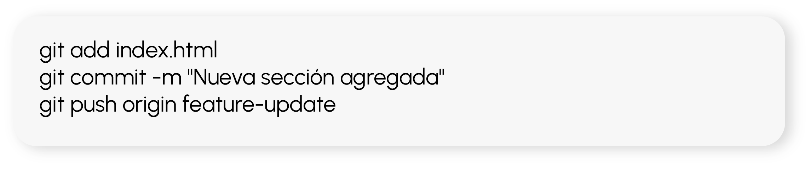
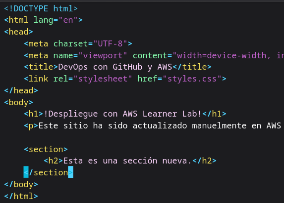
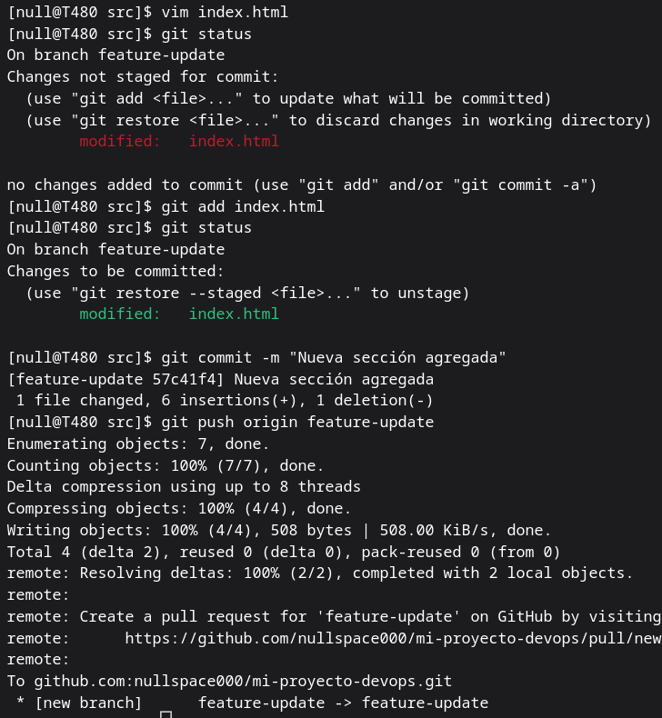
- Crea un Pull Request en GitHub y revisa los cambios antes de fusionarlos a main.
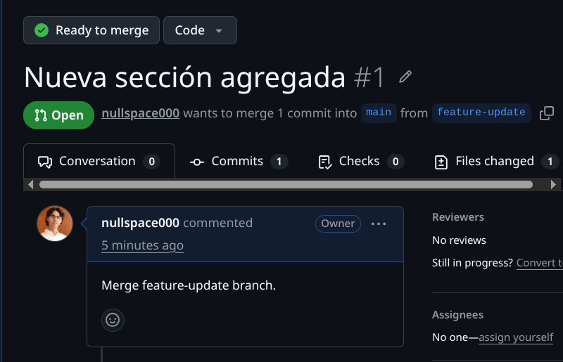
- Realiza el merge y vuelve a ejecutar el script de despliegue para reflejar los cambios en S3.
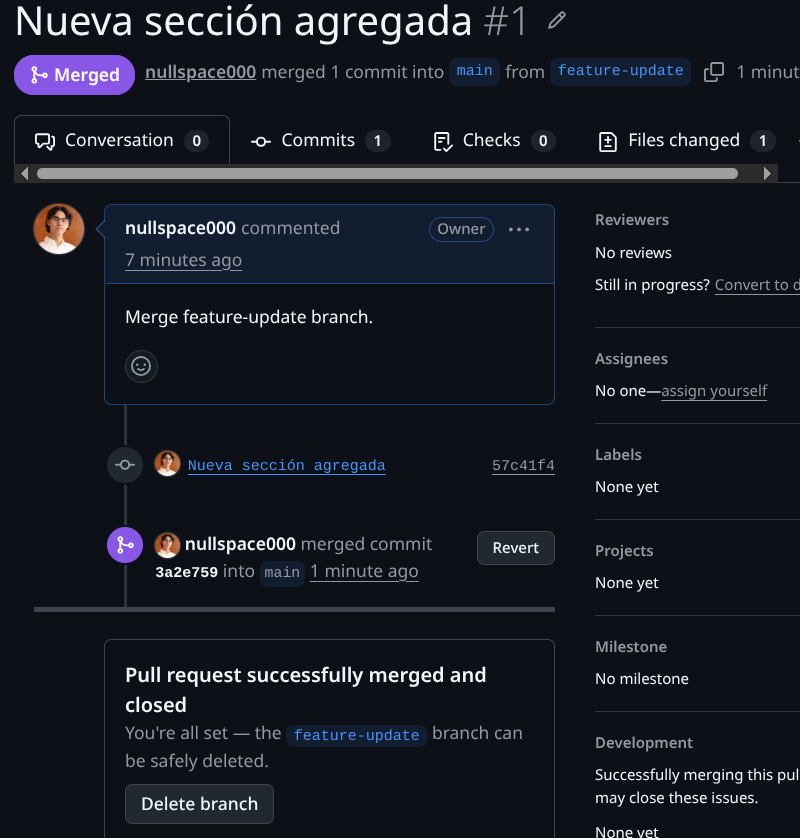